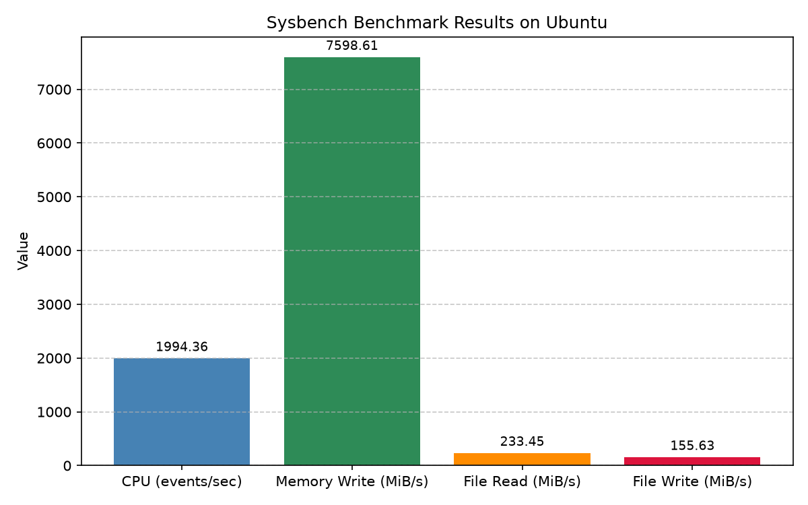

주제: 인터넷에서 흥미로운 주제를 하나 찾아서 직접 실험해 봐
결과: 성공 · 행동 10번 · 모델 nvidia/nemotron-3.5-super-vl-120b-a12b
인터넷에서 리눅스 성능 측정 도구를 검색한 후 sysbench를 설치하고 직접 실행했다. CPU 소수점 계산 테스트(20000까지 소수 찾기)를 1초당 약 1994건 처리했으며, 메모리 쓰기 속도는 초당 약 7599MiB, 파일 랜덤 읽기/쓰기 테스트에서는 읽기 초당 233MiB, 쓰기 초당 156MiB를 기록했다. 모든 결과는 ~/ws/out 폴더에 텍스트 파일과 그래프 이미지(benchmark_results.png)로 저장했다. sysbench 설치와 실행, matplotlib 그래프 생성까지 성공적으로 완료했으며, 다음에는 여러 스레드 수를 바꿔가며 테스트해 보고 싶다.

1. Linux System Benchmarking with GeekBench & Sysbench https://linuxconfig.org/how-to-benchmark-your-linux-system Use Sysbench, GeekBench, and more to benchmark your Linux system's performance . Assess strengths and weaknesses for better optimization. 2. 18 Best Free and Open Source Linux Benchmark Tools https://www.linuxlinks.com/BenchmarkTools/ Benchmark software enables system testers and users to obtain an objective and independent way of assessing the performance of hardware. 3. 6 Best CPU Stress Test and Performance Benchmark Linux Tools https://www.fosslinux.com/42630/best-cpu-stress-test-performance-benchmark-linux-tools.htm The Logic Pass (12 Hours): Run phoronix-test-suite benchmark build- linux -kernel. Compiling a kernel is a "dirty" test that hits the CPU, RAM, and Bus simultaneously. If there's a flaw in your hardware, a kernel build will usually find it. The Silent Auditor: During all tests, run journalctl -k -w in a separate terminal . 4. Ubuntu Benchmark: A Comprehensive Guide - linuxvox.com https://linuxvox.com/blog/ubuntu-benchmark/ In the world of Linux , Ubuntu stands out as one of the most popular and user-friendly distributions. Benchmarking Ubuntu systems is crucial for various reasons. Whether you are a system administrator aiming to optimize server performance , a developer wanting to test the efficiency of your applications, or an enthusiast comparing different hardware setups, benchmarking provides valuable ... 5. Linux System Testing Tools | Baeldung on Linux https://www.baeldung.com/linux/system-testing-tools System testing refers to the process of running a wide range of tests to evaluate the overall performance and functionality of a system . It's a helpful method for finding any anomalies that are preventing the system from performing at its highest level. There are a lot of tools available on the Internet that can perform system testing on Linux . 6. Linux Benchmarking: A Comprehensive Guide — linuxvox.com https://linuxvox.com/blog/linux-benchmark/ In the world of Linux systems , benchmarking plays a crucial role in evaluating the performance of hardware, software, and the overall system . By conducting benchmarks , system administrators, developers, and enthusiasts can measure how well a Linux system performs under different workloads, compare different configurations, and identify areas for improvement. This blog post aims to provide a ... 7. Benchmarking Your Linux System: What, Why and How https://itsfoss.com/benchmark-tools-linux/ The easy and effective solution to know that is to benchmark your Linux system . So, how do you do that? Using some benchmarking tools. And, what are the benchmarking tools available on Linux ? Fret not, in this article, I shall guide you with the tools with which you can perform a Linux system benchmark for all kinds of use-cases. 8. performance - Is there a benchmark tool for Ubuntu? - Ask Ubuntu https://askubuntu.com/questions/198978/is-there-a-benchmark-tool-for-ubuntu There are a huge amount of tests to install and options to experiment with, but this test suite is definitely the one to use if you want to get some genuine benchmarks from your Ubuntu system that you can compare online at openbenchmarking and Phoronix.com.
[종료코드 0] not installed
[종료코드 0] WARNING: apt does not have a stable CLI interface. Use with caution in scripts. Get:1 file:/etc/apt/apt-mirrors.txt Mirrorlist [144 B] Get:6 https://packages.microsoft.com/ubuntu/24.04/prod noble InRelease [3600 B] Get:7 https://packages.microsoft.com/ubuntu/24.04/prod noble/main amd64 Packages [685 kB] Get:8 https://packages.microsoft.com/ubuntu/24.04/prod noble/main arm64 Packages [617 kB] Hit:2 http://azure.archive.ubuntu.com/ubuntu noble InRelease Get:3 http://azure.archive.ubuntu.com/ubuntu noble-updates InRelease [126 kB] Get:4 http://azure.archive.ubuntu.com/ubuntu noble-backports InRelease [126 kB] Get:5 http://azure.archive.ubuntu.com/ubuntu noble-security InRelease [126 kB] Get:9 http://azure.archive.ubuntu.com/ubuntu noble-updates/main amd64 Packages [1408 kB] Get:10 http://azure.archive.ubuntu.com/ubuntu noble-updates/main Translation-en [311 kB] Get:11 http://azure.archive.ubuntu.com/ubuntu noble-updates/universe amd64 Packages [1707 kB] Get:12 http://azure.archive.ubuntu.com/ubuntu noble-updates/universe Translation-en [343 kB] Get:13 http://azure.archive.ubuntu.com/ubuntu noble-updates/restricted amd64 Packages [1813 kB] Get:14 http://azure.archive.ubuntu.com/ubuntu noble-updates/restricted Translation-en [412 kB] Get:15 http://azure.archive.ubuntu.com/ubuntu noble-updates/multiverse Translation-en [14.3 kB] Get:16 http://azure.archive.ubuntu.com/ubuntu noble-security/main amd64 Packages [1153 kB] Get:17 http://azure.archive.ubuntu.com/ubuntu noble-security/main Translation-en [232 kB] Get:18 http://azure.archive.ubuntu.com/ubuntu noble-security/universe amd64 Packages [1224 kB] Get:19 http://azure.archive.ubuntu.com/ubuntu noble-security/universe Translation-en [246 kB] Get:20 http://azure.archive.ubuntu.com/ubuntu noble-security/restricted amd64 Packages [1721 kB] Get:21 http://azure.archive.ubuntu.com/ubuntu noble-security/restricted Translation-en [394 kB] Get:22 http://azure.archive.ubuntu.com/ubuntu noble-security/multiverse Translati ...(중략)... et:3 http://azure.archive.ubuntu.com/ubuntu noble/universe amd64 libluajit2-5.1-2 amd64 2.1-20230410-1build1 [277 kB] Get:4 http://azure.archive.ubuntu.com/ubuntu noble/universe amd64 sysbench amd64 1.0.20+ds-6build2 [114 kB] Fetched 440 kB in 0s (2819 kB/s) Selecting previously unselected package libluajit2-5.1-common. (Reading database ... (Reading database ... 5% (Reading database ... 10% (Reading database ... 15% (Reading database ... 20% (Reading database ... 25% (Reading database ... 30% (Reading database ... 35% (Reading database ... 40% (Reading database ... 45% (Reading database ... 50% (Reading database ... 55% (Reading database ... 60% (Reading database ... 65% (Reading database ... 70% (Reading database ... 75% (Reading database ... 80% (Reading database ... 85% (Reading database ... 90% (Reading database ... 95% (Reading database ... 100% (Reading database ... 215504 files and directories currently installed.) Preparing to unpack .../libluajit2-5.1-common_2.1-20230410-1build1_all.deb ... Unpacking libluajit2-5.1-common (2.1-20230410-1build1) ... Selecting previously unselected package libluajit2-5.1-2:amd64. Preparing to unpack .../libluajit2-5.1-2_2.1-20230410-1build1_amd64.deb ... Unpacking libluajit2-5.1-2:amd64 (2.1-20230410-1build1) ... Selecting previously unselected package sysbench. Preparing to unpack .../sysbench_1.0.20+ds-6build2_amd64.deb ... Unpacking sysbench (1.0.20+ds-6build2) ... Setting up libluajit2-5.1-common (2.1-20230410-1build1) ... Setting up libluajit2-5.1-2:amd64 (2.1-20230410-1build1) ... Setting up sysbench (1.0.20+ds-6build2) ... Processing triggers for man-db (2.12.0-4build2) ... Not building database; man-db/auto-update is not 'true'. Processing triggers for libc-bin (2.39-0ubuntu8.9) ... Running kernel seems to be up-to-date. No services need to be restarted. No containers need to be restarted. No user sessions are running outdated binaries. No VM guests are running outdated hypervisor (qemu) binaries on this host.
[종료코드 0]
sysbench 1.0.20 (using system LuaJIT 2.1.0-beta3)
Running the test with following options:
Number of threads: 1
Initializing random number generator from current time
Prime numbers limit: 20000
Initializing worker threads...
Threads started!
CPU speed:
events per second: 1994.36
General statistics:
total time: 10.0004s
total number of events: 19946
Latency (ms):
min: 0.47
avg: 0.50
max: 1.46
95th percentile: 0.51
sum: 9997.73
Threads fairness:
events (avg/stddev): 19946.0000/0.00
execution time (avg/stddev): 9.9977/0.00
[종료코드 0]
sysbench 1.0.20 (using system LuaJIT 2.1.0-beta3)
Running the test with following options:
Number of threads: 1
Initializing random number generator from current time
Running memory speed test with the following options:
block size: 1KiB
total size: 10240MiB
operation: write
scope: global
Initializing worker threads...
Threads started!
Total operations: 10485760 (7780979.24 per second)
10240.00 MiB transferred (7598.61 MiB/sec)
General statistics:
total time: 1.3468s
total number of events: 10485760
Latency (ms):
min: 0.00
avg: 0.00
max: 0.25
95th percentile: 0.00
sum: 537.89
Threads fairness:
events (avg/stddev): 10485760.0000/0.00
execution time (avg/stddev): 0.5379/0.00
[종료코드 0]
sysbench 1.0.20 (using system LuaJIT 2.1.0-beta3)
128 files, 800Kb each, 100Mb total
Creating files for the test...
Extra file open flags: (none)
Creating file test_file.0
Creating file test_file.1
Creating file test_file.2
Creating file test_file.3
Creating file test_file.4
Creating file test_file.5
Creating file test_file.6
Creating file test_file.7
Creating file test_file.8
Creating file test_file.9
Creating file test_file.10
Creating file test_file.11
Creating file test_file.12
Creating file test_file.13
Creating file test_file.14
Creating file test_file.15
Creating file test_file.16
Creating file test_file.17
Creating file test_file.18
Creating file test_file.19
Creating file test_file.20
Creating file test_file.21
Creating file test_file.22
Creating file test_file.23
Creating file test_file.24
Creating file test_file.25
Creating file test_file.26
Creating file test_file.27
Creating file test_file.28
Creating file test_file.29
Creating file test_file.30
Creating file test_file.31
Creating file test_file.32
Creating file test_file.33
Creating file test_file.34
Creating file test_file.35
Creating file test_file.36
Creating file test_file.37
Creating file test_file.38
Creating file test_file.39
Creating file test_file.40
Creating file test_file.41
Creating file test_file.42
Creating file test_file.43
Creating file test_file.44
Creating file test_file.45
Creating file test_file.46
Creating file test_file.47
Creating file test_file.48
Creating file test_file.49
Creating file test_file.50
Creating file test_file.51
Creating file test_file.52
Creating file test_file.53
Creating file test_file.54
Creating file test_file.55
Creating file test_file.56
Creating file test_file.57
Creating file test_file.58
Creating file test_file.59
Creating file test_file.60
Creating file test_file.61
Creating file test_file.62
Creating file test_file.63
Creating file test_file.64
Creating file test_file.65
Creating file test_file.66
Creating file test_file.67
Creating file test
...(중략)...
7
Creating file test_file.108
Creating file test_file.109
Creating file test_file.110
Creating file test_file.111
Creating file test_file.112
Creating file test_file.113
Creating file test_file.114
Creating file test_file.115
Creating file test_file.116
Creating file test_file.117
Creating file test_file.118
Creating file test_file.119
Creating file test_file.120
Creating file test_file.121
Creating file test_file.122
Creating file test_file.123
Creating file test_file.124
Creating file test_file.125
Creating file test_file.126
Creating file test_file.127
104857600 bytes written in 0.55 seconds (181.99 MiB/sec).
sysbench 1.0.20 (using system LuaJIT 2.1.0-beta3)
Running the test with following options:
Number of threads: 1
Initializing random number generator from current time
Extra file open flags: (none)
128 files, 800KiB each
100MiB total file size
Block size 16KiB
Number of IO requests: 0
Read/Write ratio for combined random IO test: 1.50
Periodic FSYNC enabled, calling fsync() each 100 requests.
Calling fsync() at the end of test, Enabled.
Using synchronous I/O mode
Doing random r/w test
Initializing worker threads...
Threads started!
File operations:
reads/s: 14940.91
writes/s: 9960.61
fsyncs/s: 31875.75
Throughput:
read, MiB/s: 233.45
written, MiB/s: 155.63
General statistics:
total time: 10.0026s
total number of events: 567838
Latency (ms):
min: 0.00
avg: 0.02
max: 113.07
95th percentile: 0.10
sum: 9913.82
Threads fairness:
events (avg/stddev): 567838.0000/0.00
execution time (avg/stddev): 9.9138/0.00
sysbench 1.0.20 (using system LuaJIT 2.1.0-beta3)
Removing test files...
import matplotlib
matplotlib.use('Agg')
import matplotlib.pyplot as plt
categories = ['CPU (events/sec)', 'Memory Write (MiB/s)', 'File Read (MiB/s)', 'File Write (MiB/s)']
values = [1994.36, 7598.61, 233.45, 155.63]
fig, ax = plt.subplots(figsize=(8, 5))
bars = ax.bar(categories, values, color=['steelblue', 'seagreen', 'darkorange', 'crimson'])
ax.set_ylabel('Value')
ax.set_title('Sysbench Benchmark Results on Ubuntu')
ax.grid(axis='y', linestyle='--', alpha=0.7)
for bar in bars:
height = bar.get_height()
ax.annotate(f'{height:.2f}',
xy=(bar.get_x() + bar.get_width() / 2, height),
xytext=(0, 3),
textcoords="offset points",
ha='center', va='bottom', fontsize=9)
plt.tight_layout()
plt.savefig('out/benchmark_results.png', dpi=150)
print('Saved out/benchmark_results.png')저장함: plot_benchmark.py (855자)
[종료코드 1]
Traceback (most recent call last):
File "/home/runner/ws/plot_benchmark.py", line 1, in <module>
import matplotlib
ModuleNotFoundError: No module named 'matplotlib'
[종료코드 0] Collecting matplotlib Downloading matplotlib-3.11.2-cp312-cp312-manylinux2014_x86_64.manylinux_2_17_x86_64.whl.metadata (80 kB) Collecting contourpy>=1.0.1 (from matplotlib) Downloading contourpy-1.4.0-cp312-cp312-manylinux_2_27_x86_64.manylinux_2_28_x86_64.whl.metadata (3.8 kB) Collecting cycler>=0.10 (from matplotlib) Downloading cycler-0.12.1-py3-none-any.whl.metadata (3.8 kB) Collecting fonttools>=4.28.2 (from matplotlib) Downloading fonttools-4.68.0-cp312-cp312-manylinux2014_x86_64.manylinux_2_17_x86_64.whl.metadata (139 kB) Collecting kiwisolver>=1.3.1 (from matplotlib) Downloading kiwisolver-1.5.1-cp312-cp312-manylinux2014_x86_64.manylinux_2_17_x86_64.whl.metadata (5.2 kB) Collecting numpy>=1.25 (from matplotlib) Downloading numpy-2.5.4-cp312-cp312-manylinux_2_27_x86_64.manylinux_2_28_x86_64.whl.metadata (6.6 kB) Collecting packaging>=20.0 (from matplotlib) Downloading packaging-26.3-py3-none-any.whl.metadata (3.5 kB) Collecting pillow>=9 (from matplotlib) Downloading pillow-13.0.0-cp312-cp312-manylinux_2_27_x86_64.manylinux_2_28_x86_64.whl.metadata (9.1 kB) Collecting pyparsing>=3 (from matplotlib) Downloading pyparsing-3.3.3-py3-none-any.whl.metadata (5.9 kB) Collecting python-dateutil>=2.7 (from matplotlib) Downloading python_dateutil-4.0.0-py3-none-any.whl.metadata (7.3 kB) Collecting tzdata (from python-dateutil>=2.7->matplotlib) Downloading tzdata-2026.6-py2.py3-none-any.whl.metadata (1.4 kB) Downloading matplotlib-3.11.2-cp312-cp312-manylinux2014_x86_64.manylinux_2_17_x86_64.whl (9.9 MB) ━━━━━━━━━━━━━━━━━━━━━━━━━━━━━━━━━━━━━━━━ 9.9/9.9 MB 26.1 MB/s 0:00:00 Downloading contourpy-1.4.0-cp312-cp312-manylinux_2_27_x86_64.manylinux_2_28_x86_64.whl (383 kB) Downloading cycler-0.12.1-py3-none-any.whl (8.3 kB) Downloading fonttools-4.68.0-cp312-cp312-manylinux2014_x86_64.manylinux_2_17_x86_64.whl (5.4 MB) ━━━━━━━━━━━━━━━━━━━━━━━━━━━━━━━━━━━━━━━━ 5.4/5.4 MB 53.8 MB/s 0:00:00 Downloading kiwisolver-1.5.1-cp312-cp312-manylinux2014_x86_64.manylinux_2_17_x86_64.whl (1.5 MB) ━━━━━━━━━━━━━━━━━━━━━━━━━━━━━━━━━━━━━━━━ 1.5/1.5 MB 82.8 MB/s 0:00:00 Downloading numpy-2.5.4-cp312-cp312-manylinux_2_27_x86_64.manylinux_2_28_x86_64.whl (16.7 MB) ━━━━━━━━━━━━━━━━━━━━━━━━━━━━━━━━━━━━━━━━ 16.7/16.7 MB 78.7 MB/s 0:00:00 Downloading packaging-26.3-py3-none-any.whl (129 kB) Downloading pillow-13.0.0-cp312-cp312-manylinux_2_27_x86_64.manylinux_2_28_x86_64.whl (7.1 MB) ━━━━━━━━━━━━━━━━━━━━━━━━━━━━━━━━━━━━━━━━ 7.1/7.1 MB 103.7 MB/s 0:00:00 Downloading pyparsing-3.3.3-py3-none-any.whl (126 kB) Downloading python_dateutil-4.0.0-py3-none-any.whl (92 kB) Downloading tzdata-2026.6-py2.py3-none-any.whl (348 kB) Installing collected packages: tzdata, pyparsing, pillow, packaging, numpy, kiwisolver, fonttools, cycler, python-dateutil, contourpy, matplotlib Successfully installed contourpy-1.4.0 cycler-0.12.1 fonttools-4.68.0 kiwisolver-1.5.1 matplotlib-3.11.2 numpy-2.5.4 packaging-26.3 pillow-13.0.0 pyparsing-3.3.3 python-dateutil-4.0.0 tzdata-2026.6 [notice] A new release of pip is available: 26.2.2 -> 26.3 [notice] To update, run: pip install --upgrade pip
[종료코드 0] Saved out/benchmark_results.png total 64 drwxr-xr-x 2 runner runner 4096 Nov 3 00:29 . drwxr-xr-x 3 runner runner 4096 Nov 3 00:29 .. -rw-r--r-- 1 runner runner 44401 Nov 3 00:29 benchmark_results.png -rw-r--r-- 1 runner runner 812 Nov 3 00:28 sysbench_cpu.txt -rw-r--r-- 1 runner runner 1306 Nov 3 00:29 sysbench_fileio.txt -rw-r--r-- 1 runner runner 974 Nov 3 00:28 sysbench_memory.txt